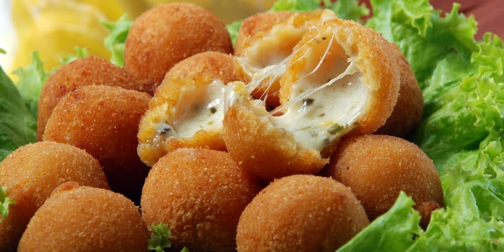
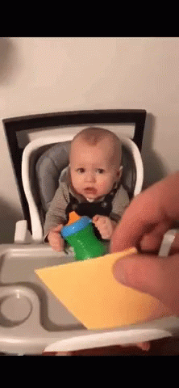

from the portuguese "Cheese ball"
The practicality of the recipe helped to popularize the snack. You may call it a finger food, but everybody grab them with a full hand, just to be sure to take as much as possible. In the recipe it can be uses oregano, parsley, and other spices, and also come with sauces such as tomato, mustard and ketchup. The fame of cheese balls started at children's parties, and was soon incorporated into receptions such as weddings. From there to the bars it was fast, and soon they conquered from North to South of Brazil, becoming a constant presence on the menus.
People believe that it's a fried pastry snack from heavens, and who am I to say it is not? One bite awakens a flow of pure golden flavor, known as melted cheese. Let's be honest: people who doesn't love cheese can't be relied on. Whoever is lactose intolerant must know that this snack is a delight worth spending Lactase enzymes.
Coxinha wished in it wildest dreams to be as good and democratic as Bolinha de Queijo, but she can't - boohoo. Cheese, what's not to love? Not only is a very effective way to calm your baby (as seen in previous image), it's a short-cut to everybody's heart. Vegetarians wants to be a part of the party but once they know there's chicken in this pastry, they sing "all by myself". Vegetarian coxinha? Don't make me laugh. Bolinha de Queijo is always moist and a respectful foodporn, while Coxinha needs catupiry to have this moist - a ingredient that requires milk, therefore excludes the only demographics who makes sense to choose Coxinha over Bolinha de queijo, the lactose intolerant.